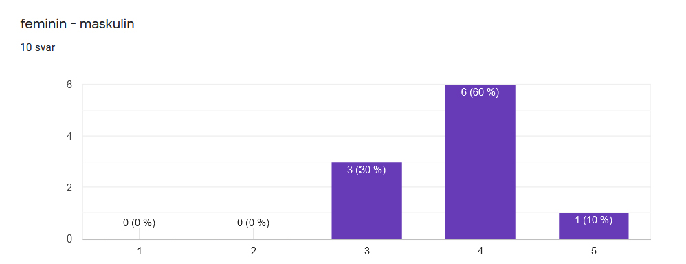
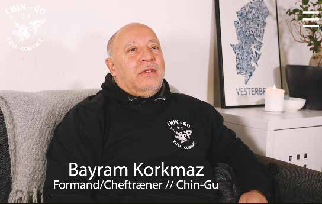

Grundlæggende indhold
Beskrivelse
Tema 5, grundlæggende indhold. Læring i copyright, ophavsret og dertil licens. “Multimediedesignerens værdikæde”. Med fokus på redesign og gennemført tests og interview med indehaveren af virksomheden, er der blevet lavet en udpenslet SCRUM-board med opgaver til hver især i gruppen. Med udgangspunkt i Double Diamond-metoden er boardet blevet farvelagt for endnu større overblik. Med BERT-test i baglommen og interviews er der blevet lavet et redesign af en side der kunne bruge et løft. Fotostilen er blevet sat og foto-kompositionen er der tænkt over. Med et gruppearbejde der har fokus på samarbejde og rækkefølge med vores Double Diamond-metode har vi tæsket igennem filmning, klipning, design og kode. Det ender ud i en procesdokumentation på 53 sider med målgruppe, tests, analyser, sammenkædning fra gammel til ny, brugerrejsen, colorgrading, flere tests og feedback. Min gruppe fandt frem til kickboxingklubben Chin Gu, hvis hjemmeside vi gerne ville redesigne.
Analyse & research
BERT-test
Der er blevet brugt mange analysemodeller og former for research til dette gruppeprojekt, men jeg vil starte ud med vores BERT-test, som er en femtrinsskala-spørgeskema som er en kvantitativ metode til at undersøge brugerens umiddelbare mening om et site. Her fandt vi ud af, at de fleste opfangede det eksisterende site maskulint. Det kom til udtryk bl.a. ved farvevalg og ved at der umiddelbart mest blev vist billeder af mænd, på de få billeder der var til stede.
Nuværende site og brugerprofil
Efter et interview med fungerende leder af klubben, fandt vi frem til hvordan de gerne vil fremstå over for deres kunder og hvem de vil tiltrække. Vi skabte en brugerprofil, som vi kunne arbejde ud fra. Vi fandt også frem til hvilket "brand" der ville give mening at give klubben, for at opfylde kundens (klubbens) behov, samt at give et indspark som fungerende multimediedesigner til en forbedring. Vi kom sammen frem til at "sammenhold" og "respekt" skulle være i højsædet, sammen med en større repræsentation af kvinder på sitet, som skal vise alsidigheden i klubben.
Design
Moodboard
Moodboardet er til for at kunne skabe en stemning, give en fornemmelse for farver, billeder og typografi. Skrå linjer og et mere stilrent look, med varmere farver og koldere colorgrading på billeder blev en idé vi gerne ville gå videre med.
Styletile
Derefter blev der udarbejdet et styletile, der går mere i dybden med hvordan det egentlig skal sige ud. Moodboardet er en opslagstavle med en stemning, styletile er hvor man beslutter sig for et mere stringent look.
Designguide
Ved at udarbejde en decideret designguide blev det lettere for os, som gruppe, at lave et strømlinet design, ved brug af dette "opslagsværk".
Fotostil
Billederne skal vise aktion, fart, sammenhold. Vi havde også fokus på at få nogle gode billeder af kvinder og børn, for at vise et mere alsidigt billede af klubben. Som tidligere nævnt, valgte vi at få nogle lidt kolde billeder på vores site, som pendent til de varme farver.
Prototype
Forside
Om os
Træning & Holdtyper og footer
Kodning
HTML
Efter prototypen sad i skabet, skulle hjemmesiden kodes. Vi brugte GitHub til at holde vores kode samlet, så vi alle havde mulighed for at arbejde samtidig.
HTML
Her ses et eksempel på vores CSS-kode. Hver underside havde hver sin unikke .css samt en delt mutual.css, som skulle være fungerende for alle siderne. Her er reglerne for designguiden f.eks. implementeret, altså noget der er gennemgående for alle sites.
Film og musik
Film
Vores forside har fået en fin hero med hurtige klip fra klubben og vores "Om os" har en video med interview af Bayram Korkmaz, som er formanden for klubben. Da vi var ude og filme fik vi også filmet en masse B-roll, og taget billeder til vores site. Forside-heroen er colorgradet i gråskala, for at få den mere til at virke som "baggrundsstøj" på forsiden, samtidig med at den fanger din opmærksomhed. Det giver et dramatisk look og gør videoen rå at se på. "Om os"-vidoen har fået samme colorgrading som billederne, på nær interviewet med formanden, da han skulle udstråle varme og venlighed, for at understrege klubben principper om sammenhold.
Musik
Vi valgte at få komponeret musik til vores film, så det fik den rette stemning. Musikken skaber det rette tempo og har været godt med den hurtige klipning, vi søgte.
Analyse
Lighthouse test
Ved en Lighthouse-test kan man se hvor god din hjemmeside klarer sig på forskellige parametre. Vores side kunne godt SEO-optimeres en smule, for at nå den flotte, grønne farve man ønsker, men ellers scorer vores side højt.